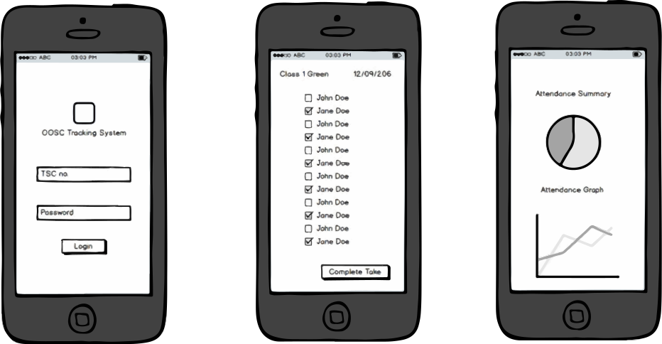
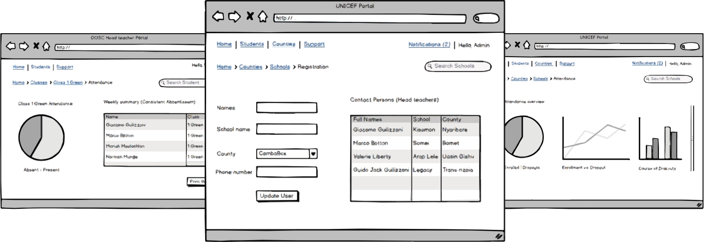

{{item.text}}
{{item.description}}
{{item.description2}}
{{item.description3}}
{{item.description4}}
{{item.description5}}
{{item.text}}
{{item.description}}
{{item.description2}}
{{item.description3}}
{{item.description4}}
{{item.description5}}
Approach & Process
{{item.text}}
{{item.description}}
{{item.description2}}
{{item.description3}}
{{item.description4}}
{{item.description5}}
How might we address disparities in access to education that still exist in the arid and semi-arid areas as well as in the informal settlements of Kenya
with 20% of the children who join grade one being likely to leave before reaching the last grade of primary education?
Goal #1:To digitize the existing paper based tracking tools for pupils, teachers and schools to automate the process, increase the reliability and accuracy of the data collected.
Goal #2:To enable data collection on pupil attendance and progress at school level.
Goal #3:To develop a set of real-time reports and informatics tailor-made for each of the stakeholders and audiences from school, county and national level.
Goal #4:To provide an integration mechanism with the existing Government EMIS dashboard.
Goal #5:To provide structured information that can be used for policy making and planning.
Key Approaches from User Research
{{item.insight1}}
{{item.insight2}}
{{item.insight5}}
{{item.insight6}}
The Mobile Application
The application would work on a smart device running on Android platform (the most common mobile device operating system). The main use of the mobile application would be data capturing and basic analytics. The class/head teachers would login and manage the attendance register, graduation and progress of pupils.
The teacher would have an option to provide comments regarding reason of absence and lack of promotion of any pupils. Once the data is captured, the teacher would then submit the records that would then be stored in a cloud service.
The mobile application will be offline first to cater for users in remote areas and will be able to capture data that would be transmitted via Internet on real time basis to a server for processing in a cloud service with redundancy mechanisms.
The data in the database will be analyzed using different parameters and reports generated addressing the description of each stakeholder. Various dissemination mechanisms shall be used for the narrative and infographics.
Wireframes
The Web Application
The web portal would be primarily used for data reports viewing and visualization. The web portal would largely be used by users whose roles would be to analyze statistics and trends. At the school level, the teachers and head-teachers would be given access to the portal to view classrooms attendance and overall school attendance records respectively. Any users with rights to access the web portal will be assigned appropriate login credentials that will give access to the system dashboard.
Beyond the teachers and head-teachers, education representatives from the county, national government and UNICEF will be able to get visual representation of the overall attendance of the students across the schools. They will also access aggregated data at county level where necessary. The UNICEF officials will also have access to a super admin dashboard which will allow creation and removal of users and roles.
The application would be cloud based with secured dashboards for the different categories of users.
Wireframes
Visual Concept
Color Scheme
We went for blue as our primary color to establish trust, loyalty and competence with our target audience i.e. teachers, government and partner stakeholders.
{{item.hex}}
Typography
{{item.text}}
{{item.text2}}
{{item.text3}}
{{item.text}}
{{item.text2}}
{{item.text3}}
{{item.text}}
{{item.text2}}
{{item.text3}}
Useful Links
{{item.subtext}}
{{item.text}}